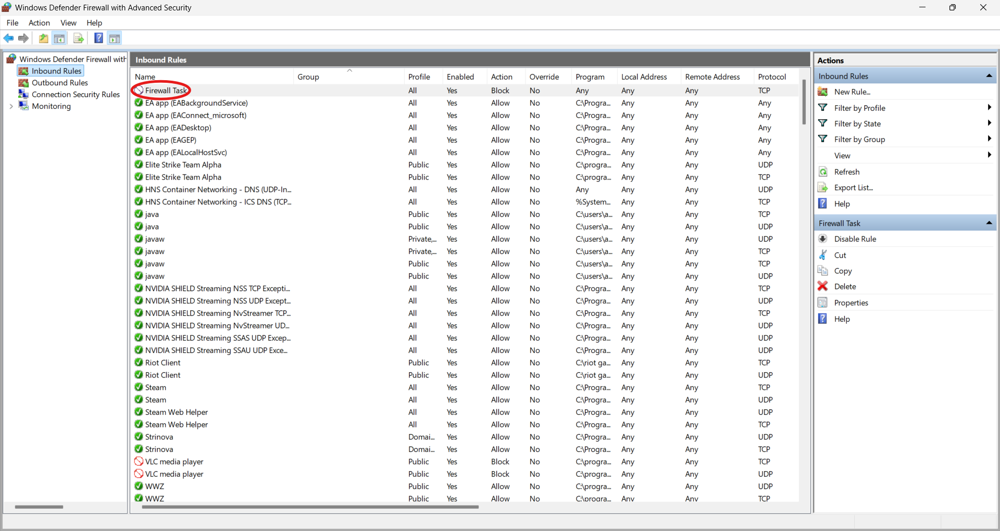
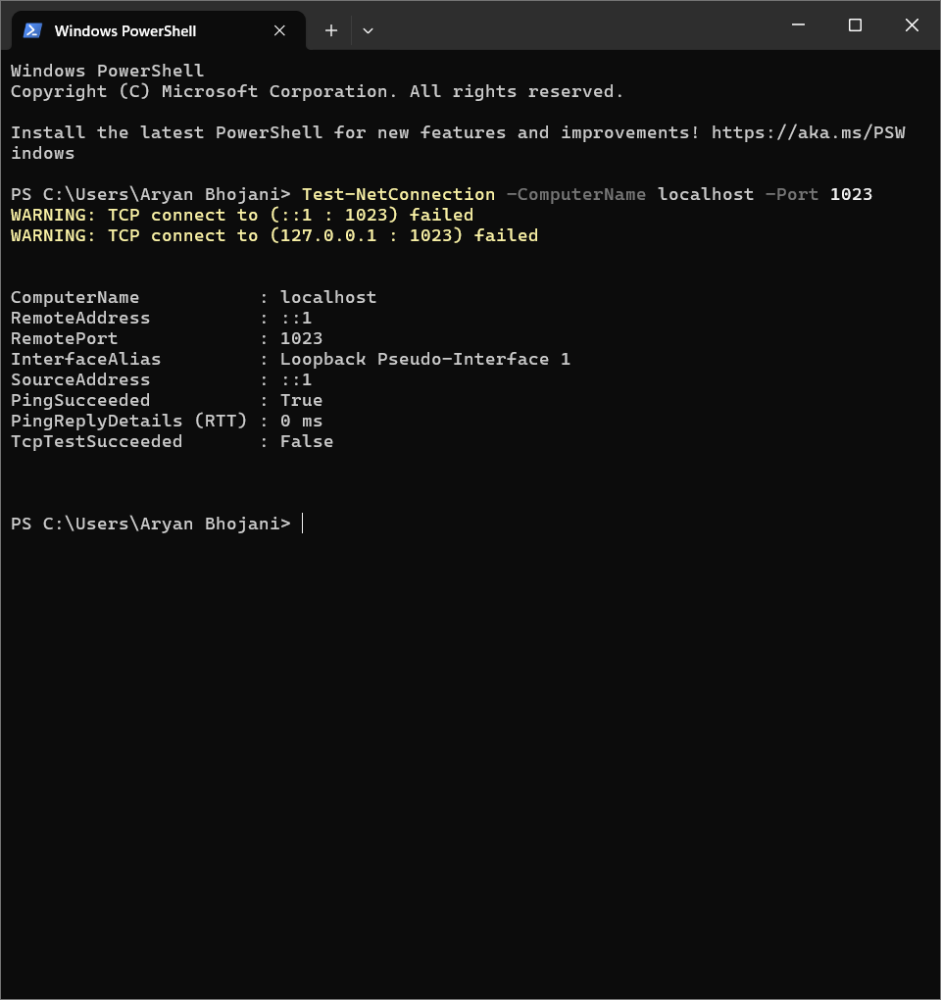

Firewall Configuration Report
Task: Task 4 – Setup and Use a Firewall on Windows
Internship: Cyber Security Internship
Objective: Configure and test basic firewall rules to allow or block traffic.
1. Opening Windows Defender Firewall
To begin, I opened the Windows Defender Firewall with Advanced Security by typing wf.msc in the Run dialog box.
Upon opening, the console displays the current inbound rules configured on the system.
2. Firewall Rule Creation
I created a new inbound firewall rule named “Firewall Task” using the Windows Defender Firewall GUI. The rule was configured to block TCP traffic on port 1023 for all network profiles (Domain, Private, and Public).
New Inbound Rule Wizard Steps:
Step 1: Rule Type - Selected 'Port' to control connections for a specific TCP or UDP port.
Step 2: Protocol and Ports - Configured the rule to apply to TCP traffic on specific local port 1023.
Step 3: Action - Chosen action was to 'Block the connection' for any traffic matching the rule.
Step 4: Profile - Applied the rule to all network profiles: Domain, Private, and Public.

Step 5: Name - Named the new rule "Firewall Task" for easy identification.
After completing the wizard, the new "Firewall Task" rule was visible and enabled in the Inbound Rules list.

3. Testing the Rule
I used PowerShell's Test-NetConnection cmdlet to verify if port 1023 was successfully blocked by the new rule.
Test-NetConnection -ComputerName localhost -Port 1023
Result: The connection attempt failed, indicated by TcpTestSucceeded : False, confirming that the firewall rule was working correctly and blocking traffic on port 1023.

4. Removing the Firewall Rule
To restore the system to its original state, I removed the "Firewall Task" rule using PowerShell.
Remove-NetFirewallRule -DisplayName "Firewall Task"
Result: The rule was successfully removed from the firewall configuration.
5. Summary
- Successfully configured a Windows Firewall rule to block TCP traffic on port 1023.
- Verified the block using PowerShell's
Test-NetConnection cmdlet.
- Removed the rule to return the system to its default behavior.
This task demonstrated practical knowledge of Windows Firewall, including rule creation, testing, and management, along with an understanding of network traffic filtering principles.